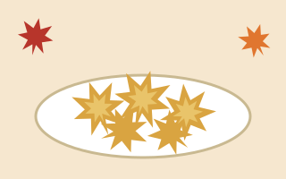
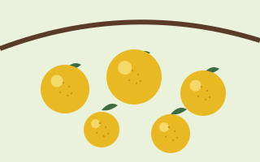
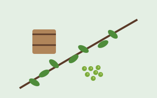
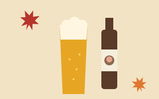
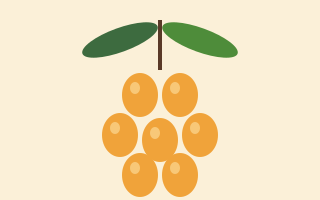

箕面・滝道
箕面大滝
「日本の滝百選」に選ばれた落差33mの滝。流れ落ちる姿が農具の「箕（み）」に似ていることが名の由来とされ、「箕面」という地名もこれに由来するといわれます。阪急箕面駅から滝道で約2.7km、徒歩40分ほどです。
滝道を歩いて大滝へ、山を越えて勝運の寺へ。市の北側に広がる明治の森箕面国定公園と、その周辺の見どころです。
「日本の滝百選」に選ばれた落差33mの滝。流れ落ちる姿が農具の「箕（み）」に似ていることが名の由来とされ、「箕面」という地名もこれに由来するといわれます。阪急箕面駅から滝道で約2.7km、徒歩40分ほどです。
箕面駅前から大滝まで続く遊歩道。83.8haの府営箕面公園の中を箕面川に沿って歩き、旧・橋本亭の外観を復元した建物や「唐人戻岩」などの見どころが点在します。公園内の滝道は一般車両の通行が禁止されています。
役行者が開いたと伝わる修験道の寺院。本尊の弁財天は日本四弁財天の一つとされ、宝くじの発祥といわれる「箕面富」が毎年10月10日に行われます。
658年、役行者により修行地として開かれたと伝わる寺。大聖歓喜天を祀った日本最初の根本霊場とされ、良縁の縁起物「懸想文」で知られます。秋の紅葉に加え、12月頃から5月頃までは椿の名所にもなります。

727年創建の高野山真言宗の寺院で、西国三十三所第23番札所。「勝ちダルマの寺」として受験・スポーツなど勝運を願う参拝者が全国から訪れます。八万坪を超える境内は桜・アジサイ・紅葉の名所です。
箕面萱野駅から阪急バス（30系統）。系統は2026年9月確認時点のもので、ご利用の際は最新情報をご確認ください滝道の途中にある昆虫館。一年中チョウが飛ぶ放蝶園があり、間近で観察できます。箕面の森はかつて「日本三大昆虫生息地」とも呼ばれました。土日祝は親子向けの工作イベントもあります。
聖徳太子ゆかりの伝承をもつ真言宗の寺院で、帝釈天・毘沙門天・弁財天の三天を祀ります。2月2日の福護摩祭りの火渡り修行は半世紀以上続く行事。春は桜の名所としても親しまれています。
『忠臣蔵』で知られる赤穂浪士・萱野三平の旧邸。西国街道沿いに長屋門と土塀の一部が残り、1973年に大阪府の史跡に指定されました。館内では三平に関する資料を展示しています。
政ノ茶屋園地にある施設で、公園の地形・地質・動植物を模型や標本で紹介しています。ここは全長1,697kmの東海自然歩道の西の起点で、ハイキングの起点としても使われます。
1956年に「箕面山ニホンザル生息地」として国の天然記念物に指定。箕面市では2010年4月から条例でサルへの餌やりを禁止しており、違反者には過料が科される場合があります。見かけても食べ物は与えずに見守りましょう。
サルへの餌やりは条例で禁止されています滝道の名物から、北部・止々呂美（とどろみ）の山の恵み、世界の品評会で評価されるクラフトビールまで。

箕面を代表する名物菓子。役行者がもみじの美しさをたたえ、灯明の油で揚げて旅人をもてなしたのが始まりと伝わります。使うのは食用の「一行寺楓（いちぎょうじかえで）」の葉で、1年ほど塩漬けにしてから揚げられます。

箕面は大阪府内で唯一、柚子を出荷生産している産地です。止々呂美地区ではおよそ40軒の農家が栽培。接ぎ木ではなく種から育てる「実生（みしょう）ゆず」は大粒で香り高く、菓子やうどん、スキンケア商品にも使われています。

止々呂美は山椒の里としても知られます。4月中旬から月末までは花山椒の収穫、5月中旬から月末には実山椒の「たる漬け」。樽に実山椒と塩を少しずつ入れ、足で踏んで漬け込む昔ながらの方法です。

1996年設立、1997年に醸造を始めた箕面市牧落のブルワリー。非熱処理・無ろ過の酵母が生きるビールで、国際的なビールコンテストでの受賞歴も多数。地元の柚子や山椒を使った季節限定品もあります。

毎週日曜の午前中に開かれる「止々呂美ふれあい朝市」では、特産のびわ、くわの実、ゆずマーマレードや山椒などの加工品、採れたて野菜が並びます。
勝運の寺・勝尾寺の縁起物。受験、厄除け、病気、スポーツなど「人生のあらゆる場面で勝つ寺」として信仰を集めています。一つの願いにつき年に一度だけ行える「六十四卦ダルマみくじ」も、勝尾寺ならではのおみくじです。
駅ごとの詳しい情報、6つのエリアの素顔、まちを支える産業、季節の行事、泊まれる宿をページごとにまとめています。